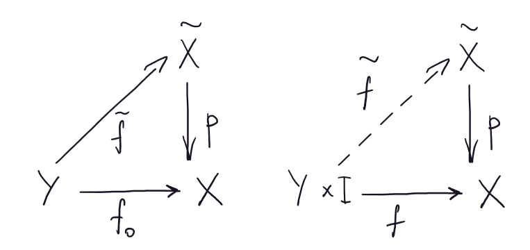

2023
\(\newcommand\blades{\,\,\,\,\style{display: inline-block; transform: rotate(135deg)}{\Large{\dagger}}\kern-7pt\style{display: inline-block; transform: rotate(225deg)}{\Large{\dagger}}}\)
Определение: Пусть \((X, \tau_X)\) и \((Y, \tau_Y)\) – топологические пространства. Топология произведения \(X\times Y\) – это топология, порожденная базой \(\{U\times V: \,\,\,\, U \in \tau_X, \,\,\,\, V \in \tau_Y\}\) на декартовом произведении \(X\times Y\).
Утверждение: Предбаза топологии произведения \(X\times Y\) – это \(\{U\times Y| \,\,\,\,U \in \tau_X\}\cup \{X\times V|\,\,\,\, V \in \tau_Y\}\).
Доказательство: \(\,\,\,\,\blacksquare\)
Определение: Пусть \(X\times Y\) – топология произведения.
Отображение \(\pi_X: X \times Y \to X, \,\,\,\, \pi_X: (x, y) \mapsto x\) – проекция на \(X\).
Утверждение: Проекции \(\pi_X\) и \(\pi_Y\) непрерывны, как отображения \(X\times Y \to X\) и \(X\times Y \to Y\) соответственно.
Доказательство: \(\,\,\,\,\blacksquare\)
Утверждение: Топология произведения – это топология с наименьшим количеством открытых множеств, относительно которой отображения проекции непрерывны.
Доказательство: \(\,\,\,\,\blacksquare\)
Утверждение: (универсальность произведения) \(\varphi: Z \to X\times Y\) непрерывно \(\iff\) непрерывны композиции \(\varphi \circ \pi_X\) и \(\varphi\circ \pi_Y\).
Доказательство:
\(\boxed{\Longrightarrow}\) Композиция непрерывных отображений непрерывна.
\(\boxed{\Longleftarrow}\) Прообраз открытого множества из базы открыт \(\,\,\,\,\blacksquare\)
Определение: Пусть \(X\) – топологическое пространство. Отображение \(x \mapsto (x, x) \in X\times X\) – диагональное отображение. Образ \(X\) при диагональном отображении – диагональ. Обозначается: \(\triangle\).
Утверждение: \(X\) – хаусдорфово \(\iff \triangle\) – замкнуто.
Доказательство:
\((x, y) \in (X \times X) \setminus \triangle \iff x \ne y \iff \exists U_x, U_y \in \tau_X: \,\,\,\, U_x \cap U_y = \varnothing \iff U_x \times U_y \subset (X \times X) \setminus \triangle \,\,\,\,\blacksquare\)
Утверждение: Пусть \(X\) и \(Y\) компактны. Тогда \(X\times Y\) компактно.
Доказательство: Пусть \(\{W_{\alpha}\}\) – покрытие. Для каждой точки \((x, y) \in X \times Y\) выберем окрестность \(U_{x}\times V_{y}\), так чтобы \(U_x \times V_y\) целиком содержалась в некотором \(W_{\alpha}\). Выбрав в покрытии \(\{U_x\times V_y\}\) конечное подпокрытие докажем теорему.
\(X \times y \cong X \,\,\,\, \forall y \in Y\). Рассмотрим покрытие \(\{U_x\times V_y|\,\,\,\, (x, y) \in X\times Y\}\) множества \(X \times y\). В силу компактности \(X\) для каждого \(y\) существует конечное подпокрытие \(\{U^y_{i}\times V^y_{i}\}_{i = 1}^{n_y}\). Пусть \(W_{y} = \cap_i V^y_{i}\). Выделим конечное подпокрытие. Тогда искомое покрытие \(\{U^{y_j}_{i}\times V^{y_j}_{i}\} \,\,\,\,\blacksquare\)
И как мы до сюда добрались без этого?
Определение: Пусть на \(X\) задано отношение эквивалентности – \(\sim\). Пусть \(X\) – топологическое пространство. Отображение проекции – это \(\pi: X \to \{[x]_{\sim}|\,\,\,\, x \in X\}, \,\,\,\, x \mapsto [x]_{\sim}\), где \([x]_{\sim}\) – класс эквивалентности точки \(x\). Зададим на множестве классов эквивалентности \(\{[x]_{\sim}|\,\,\,\, x \in X\}\) топологию. Открытыми считаются множества, прообраз которых при отображении проекции открыт в \(X\).
Такая топология – фактор-топология и обозначается \(X/\sim\).
Утверждение: Отображении проекции \(\pi: X \to X/\sim\) непрерывно.
Доказательство: \(\,\,\,\,\blacksquare\)
Утверждение: Фактор-топология – топология с наибольшим количеством открытых множеств, относительно которой отображение проекции непрерывно.
Доказательство: \(\,\,\,\,\blacksquare\)
Определение: Обозначение \(X/A\), где \(A \subset X\) обозначает, что берется фактор-топология относительно отношения эквивалентности, при котором \(x \sim y \iff x = y\) или \(x \in A\) и \(y \in A\). Топология \(X/A\) получена стягиванием подпространства в точку.
Лемма: Пусть \(X\) регулярно, \(A \subset X\) замкнуто. Тогда \(X/A\) хаусдорфово.
Доказательство: \(\,\,\,\,\blacksquare\)
Определение: Фактор-пространство \((X \sqcup Y) / \sim\) несвязной суммы пространств \(X \sqcup Y\) по отношению эквивалентности \(x \sim y \iff x = y\) или \(x = x_0\) и \(y = y_0\), где \(x_0 \in X\) и \(y_0 \in Y\) – фиксированные точки.
Обозначение: \(I = [0, 1]\).
Определение: Цилиндр – это топология произведения \(X\times I\).
\(X \times 1\) – верхнее основание цилинра, \(X \times 0\) – нижнее основание цилиндра.
Определение: Конус – это \((X\times I)/(X\times 1)\) (стягиваем верхнее основание цилиндра в точку).
\([X\times 1]_{\sim}\) – вершина конуса, \(X\times 0\) – основание конуса.
Определение: Обозначим за \(\mathcal{C}(X, Y)\) или \(Y^X\) множество непрерывных отображений \(X \to Y\). Рассмотрим топологию на \(\mathcal{C}(X, Y)\) с предбазой \(\{W(K, U)\}\), где \(W(K, U) \subset \mathcal{C}(X, Y)\), \(K\) – компакт и \(f(K) \subset U\).
Множество непрерывных функций \(X \to \mathbb{R}\) обозначается: \(\mathcal{C}(X)\).
Утверждение: Пусть \(X\) – компактное пространство, \(Y\) – метрическое, с метрикой \(\rho_0\). Тогда метрика \(\rho(f, g) = \sup_{x \in X}\{\rho_0(f(x), g(x))\}\) задает компактно-открытую топологию на \(\mathcal{C}(X, Y)\).
Доказательство: Докажем корректность определения метрики. \(\rho_0(f(x), g(x))\) непрерывна, как отображение \(f: X \to \mathbb{R}, \,\,\,\, f: x \mapsto \rho_0(f(x), g(x))\). Непрерывный образ компактного множества – компакт, а следовательно \(f(X)\) – компакт в \(\mathbb{R}\), то есть ограниченное (отсюда следует существование \(\sup_{x \in X}\{\rho_0(f(x), g(x))\}\)) и замкнутое (отсюда следует принадлежность супремума множеству, а значит существования максимума).
Проверим, что \(\rho\) – метрика:
Докажем, что порожденная метрикой \(\rho\) топология компактно-открытая. Рассмотрим \(K \subset X\) – компакт и \(U \subset Y\) – открытое в топологии \(Y\). Хотим, чтобы множество \(W(K, U) = \{\mathcal{C}(X, Y) \ni f: K \to U|\,\,\,\, f(K) \subset U\}\) было открыто в \(\mathcal{C}(X, Y)\).
Определение: Универсальное отображение \(l: X\times \mathcal{C}(X, Y) \to Y, \,\,\,\, x \mapsto f(x)\) – отображение вычисления.
Определение: Пространство \((X, \tau_X)\) локально компактно, если \(\forall x \in X, \,\,\,\, \exists U_x \in \tau_X: \,\,\,\, \operatorname{Cl}U_x\) компактно.
Утверждение: (экспоненциальный закон) Определено каноническое отображение \(\Phi: \mathcal{C}(X\times Y, Z) \to \mathcal{C}(X, \mathcal{C}(Y, Z))\) или \(\Phi: Z^{X\times Y} \to (Z^{Y})^X\).
\(\Phi: \mathcal{C}(X\times Y, Z) \ni f \mapsto \Phi(f), \,\,\,\, \Phi(f): X \to \mathcal{C}(Y, Z), \,\,\,\, \Phi(f): x \mapsto f(x, Y)\), где \(f(x, Y)\) обозначает отображение \(f(x, Y): Y \to Z, \,\,\,\, f(x, Y): y \mapsto f(x, y)\).
Доказательство:
Определение: Непрерывные отображения \(f, g: X \to Y\) гомотопные, если существует непрерывное отображение \(F: X\times I \to Y\), такое что \(F(x, 0) = f(x)\) и \(F(x, 1) = g(x)\). Отображение \(F\) – гомотопия.
Зафиксируем \(t \in I\). Отображение \(F(x, t)\) обозначается \(F_t(x)\). \(F_0 = f\) и \(F_1 = g\).
Утверждение: Каждое из отображений \(F_t(x)\) – непрерывно.
Доказательство: \(\,\,\,\,\blacksquare\)
Гомотопию между \(f\) и \(g\) можно рассматривать и как непрерывное семейство непрерывных отображений, соединяющее \(f\) и \(g\).
Утверждение: Гомотопность – это отношение эквивалентности на функциях.
Доказательство:
Гомотопные отображения обозначаются \(f \sim g\).
Определение: Фактор-множество гомотопных отображений \(X \to Y\) обозначается \([X, Y]\) или \(\pi(X, Y)\).
Определение: Топологические пространства \(X\) и \(Y\) гомотопически эквивалентны, если существуют непрерывные \(f: X \to Y\) и \(g: Y \to X\), такие что \(f\circ g\) гомотопно \(\operatorname{id}_X\) и \(g\circ f\) гомотопно \(\operatorname{id}_Y\).
При этом \(f\) и \(g\) – гомотопически обратные отображения.
Если \(f\) имеет гомотопически обратное отображение, то \(f\) – гомотопически обратимо или гомотопическая эквивалентность.
Гомотопически эквивалентные пространства обозначаются \(X \simeq Y\). Далее изоморфные пространства обозначаются \(X \cong Y\).
Утверждение: Гомотопическая эквивалентность – отношение эквивалентности на топологических пространствах.
Доказательство:
Определение: Гомотопия \(H: X \times I \to Y\) связана на \(A \subset X\), если \(\forall t \in I, \,\,\,\, \forall a \in A \,\,\,\, H(a, t) = H(a, 0)\).
Такая гомотопия еще называется \(A\)-гомотопия. Существование \(A\)-гомотопии функций \(f\) и \(g\) обозначим \(f \sim_{A} g\).
Определение: \(X\) – топологическое пространство, \(A \subset X\). Непрерывное отображение \(\rho: X \to A\) – ретракция, если \(\rho_{|A} = \operatorname{id}_A\) 1.
\(\rho\) – деформационная ретракция, если \(\rho\) – ретракция и \(\rho\) гомотопно \(\operatorname{id}_X\).
\(\rho\) – строгая деформационная ретракция, если \(\rho\) – деформационная ретракция и гомотопия \(\rho\) и \(\operatorname{id}_X\) связана на \(A\).
Если существует ретракция \(X \to A\), то \(A\) – ретракт.
Лемма: Не существует ретракции \([0, 1] \to \{0, 1\}\).
Доказательство: Пусть существует. \(\{0, 1\}\) с индуцированной топологией несвязно, а следовательно отрезок несвязен \(\blades\)
Лемма: Пусть \(X\) – топологическое пространство. \(A \subset X\) – ретракт \(X\iff\) любое непрерывное отображение \(g: A \to Y\) в произвольное топологическое пространство \(Y\) продолжается до непрерывного отображения \(X \to Y\).
Доказательство:
\(\boxed{\Longrightarrow}\) \(A \subset X\) – ретракт \(\implies \exists f: X \to A\) – непрерывное отображение и \(f_{|A} = \operatorname{id}_A \implies g\circ f\) искомое отображение.
\(\boxed{\Longleftarrow}\) \(\operatorname{id}_A: A \to A\) – непрерывное отображение. Оно продолжается до непрерывного отображения \(\rho: X \to A \,\,\,\,\blacksquare\)
Обозначение: \(B^n\) – \(n\)-мерный шар с индуцированной из \(R^n\) топологией.
Одномерный шар – отрезок,
Двумерный шар – круг.
Обозначение: \(S^n\) – \(n\)-мерная сфера.
Определение: Пусть \(A \subset X\), \(X\) – топологическое пространство. Пара \((X, A)\) обладает свойством продолжения гомотопии, если любое непрерывное отображение \(f: X\times \{0\} \cup A\times I \to Y\) продолжается до непрерывного отображения \(F: X \times I \to Y\). 2
Почему свойство продолжения гомотопии? Потому что задано отображение \(f_0: X \to Y\) (это \(f|_{X\times 0}\)) и гомотопия \(A\times I \to Y\), которую надо продолжить до гомотопии \(f_t: X\times I \to Y\).
Утверждение: Пусть \(A \subset X\) замкнуто. Пара \((X, A)\) обладает свойством продолжения гомотопии \(\iff X\times \{0\} \cup A\times I\) – ретракт \(X\times I\).
Доказательство: см. лемму \(\,\,\,\,\blacksquare\)
Вопрос: где в доказательстве используется замкнутость \(A\)?
Определение: Пространство стягиваемо, если оно гомотопически эквивалентно точке или, что тоже самое, тождественное отображение \(\operatorname{id}: X \to X\) гомотопно нулю, то есть постоянному отображению \(X \to \operatorname{pt}\).
Утверждение: Пусть \((X, A)\) обладает свойством продолжения гомотопии и \(A\) стягиваемо. Тогда \(\pi: X \to X / A\) – гомотопическая эквивалентность.
Доказательство:
Нужно доказать, что \(\exists \pi^{-1}: X / A \to X: \,\,\,\, \pi\circ \pi^{-1} \sim \operatorname{id}_{X / A}\) и \(\pi^{-1}\circ \pi \sim \operatorname{id}_X\).
\(A\) стягиваемо, то есть композиция \(c: A \to \operatorname{pt}\) гомотопно \(\operatorname{id}_A\), а значит существует непрерывное \(F’: A \times I \to A\), такое что \(F’_0 = \operatorname{id}_A\) и \(F’_1 = \operatorname{pt}\).
Пусть \(F: X\times I\to X\) продолжение гомотопии \(F’\). \(F_t(A) \subset A \,\,\,\, \forall t \in I\), а значит \(\forall t \in I\) определено отображение \(G_t: X /A \to X/A\), которое переводит класс эквивалентности \([x]\) элемента \(x \in X\) в \([F_t([x])]\). Пусть \(\pi^{-1}: X/A \to X: \begin{cases} [x] \mapsto x,\,\,\,\, x\in X\setminus A\\ [x] \mapsto \operatorname{pt}, \,\,\,\, x \in A \end{cases}\).
Тогда \(\pi\circ \pi^{-1} \sim \operatorname{id}_{X}\) посредством \(F_t\) и \(\pi^{-1}\circ \pi \sim \operatorname{id}_{X/A}\) посредством \(G_t \,\,\,\,\blacksquare\)
Непрерывное отображение \(\gamma: I \to X\) – путь в \(X\), соединяющий точки \(\gamma(0)\) и \(\gamma(1)\).
Путь – петля, если \(\gamma(0) = \gamma(1)\). Это петля в точке \(X \ni x_0 = \gamma(0) = \gamma(1)\).
Определение: Пути \(\gamma_1: I \to X\) и \(\gamma_2: I \to X\) гомотопны, если существует \(\{0, 1\}\)-гомотопия между ними, то есть \(\exists F: I\times I \to X: \,\,\,\, F(t, 0) = \gamma_1(t)\), \(F(t, 1) = \gamma_2(t)\) и \(F(0, t) = F(0, 0) = \gamma(0)\) и \(F(1, t) = F(1, 0) = \gamma(1)\).
\(\{0, 1\}\)-гомотопический класс пути \(s\) обозначается \([s]\). В дальнейшем пишу просто гомотопический класс.
Определение: Пусть \(\gamma_1\) и \(\gamma_2\) пути и \(\gamma_1(1) = \gamma_2(0)\). Произведение путей \(\gamma_1 \gamma_2\) – это путь \(\gamma: \begin{cases}\gamma_1(t),\,\,\,\, t \in [0, \frac12]\\ \gamma_2(2t - 1), \,\,\,\, t \in [\frac12, 1]\end{cases}\).
Определение: (Произведение \(\{0, 1\}\)-гомотопических классов путей)
\([u][v] = [uv], \,\,\,\, u, v\) – пути, которые можно перемножать.
Утверждение: (корректность определения произведения гомотопических классов) Пусть \(u, v, u’, v’\) – пути, определено \(uv\), \([u] = [u’]\) и \([v] = [v’]\). Тогда
Доказательство:
Обозначим множество петель в точке \(x_0 \in X\) за \(\Omega_1(X, x_0)\), а множество классов \(\{0, 1\}\)-гомотопности таких петель за \(\pi_1(X, x_0)\).
Определение: Перепараметризация пути \(\gamma: I \to X\) – это композиция \(\gamma\circ \varphi\), где \(\varphi: I \to I\) – непрерывное отображение.
Лемма: Перепараметризация пути сохраняет класс гомотопической эквивалентности пути, то есть \(\forall \gamma: I \to X\) и \(\forall \varphi: I \to I \,\,\,\, \gamma\circ \varphi \sim_{\{0, 1\}} \gamma\).
Доказательство: Рассмотрим гомотопию \(\gamma\circ \varphi_t\), где \(\varphi_t(s): (1 - t)\varphi(s) + ts \,\,\,\,\blacksquare\)
Если \(\varphi: I \to I: s \mapsto s^2\) (на графике рыжий), то \(\varphi_t(s): I \to I: s \mapsto (1 - t)s^2 + ts\) (на графике бирюзовый)
Теорема: Умножение гомотопических классов путей ассоциативно.
Доказательство:
Хотим для любых \(u \in [u], \,\,\,\, v \in [v], \,\,\,\, w \in [w] \,\,\,\, (uv)w \sim_{\{0, 1\}} u(vw)\).
Заметим что \(u(vw)\) – это перепараметризация пути \((uv)w\) с помощью отображения \(I \to I\), показанного на рисунке ниже.
Если вы хотите понять смысл теоремы, то нужно прежде всего осознать, что пути \((uv)w\) и \(u(vw)\) имеют одну и ту же траекторию, а различаются лишь «расписанием движения» по ней. Поэтому для того чтобы найти гомотопию между ними, нужно лишь найти непрерывный способ перехода от расписания одного из них на расписание другого.
Определение: Пусть \(x_0 \in X\). Обозначим \(e_{x_0}\) петлю (путь) \(I \to X: t \mapsto x_0\). \(e_{x_0}\) – единичная петля (путь).
Утверждение: \([e_{x_0}]\) – единица относительно умножения гомотопных классов путей, начинающихся в точке \(x_0\).
Доказательство:
Пусть \(\gamma: I \to X\) и \(\gamma(0) = x_0\). Тогда \(e_{x_0}\gamma\) – это перепараметризация пути \(\gamma\) с помощью отображения \(I \to I\), показанного на рисунке ниже.
Тогда \(\gamma e_{x_0}\) – это перепараметризация пути \(\gamma\) с помощью отображения \(I \to I\), показанного на рисунке ниже.
Следовательно \(e_{x_0}\gamma \sim_{\{0, 1\}} \gamma \sim_{\{0, 1\}} \gamma e_{x_0} \,\,\,\,\blacksquare\)
Определение: Пусть \(u: I \to X\) – путь. Обратный путь \(u^{-1}\) – это \(I \to X: t \mapsto u(t - 1)\).
Утверждение: Для любого пути \(u\) класс гомотопической эквивалентности обратного пути \([u^{-1}]\) является обратным по умножению к \(u\), то есть \([u][u^{-1}] = [e]\), где \(e\) некоторая единица.
Доказательство: \(u u^{-1} \sim_{\{0, 1\}} e_{u(0)}\) посредством гомотопии \(f_t f^{-1}_t\), где \[f_t: \begin{cases} u(s), \,\,\,\, s \in [0, 1 - t]\\ u(1 - t), \,\,\,\, s \in [1 - t, 1] \end{cases} \,\,\,\,\blacksquare\]
Определение: Фундаментальная группа пространства \(X\) в точке \(x_0\) – это \(\pi_1(X, x_0)\) с операцией умножения \(\{0, 1\}\)-гомотопических классов петель.
Утверждение: Фундаментальная группа выпуклого пространства \(X\) в \(\mathbb{R}^n\) с отмеченной точкой \(x_0\) тривиальна.
Доказательство: Любые две петли \(\gamma_1\) и \(\gamma_2\) можно соединить гомотопией \(f_t: (1 - t)\gamma_1(s) + \gamma_2(s)t \,\,\,\,\blacksquare\)
Изобретается конструкция, которая по всякому топологическому пространству \(X\) сооружает некоторый алгебраический объект \(A(X)\). Это может быть группа, кольцо, пространство с квадратичной формой и т. п. Сопутствующая конструкция по всякому непрерывному отображению \(f: X \to Y\) создаёт гомоморфизм \(A(f): A(X) \to A(Y)\). Эти конструкции должны удовлетворять некоторым естественным условиям, которые позволили бы связывать топологические явления с их алгебраическими образами.
\(f: (X, x_0) \to (Y, y_0)\) обозначает, что \(f: X \to Y\) – непрерывное отображение, такое что \(f(x_0) = y_0\).
Утверждение: Пусть \(f: (X, x_0) \to (Y, y_0)\). Тогда \(f_{\ast}: [u] \mapsto [f\circ u]\) – гомоморфизм фундаментальных групп \(\pi_1(X, x_0)\) и \(\pi_1(Y, y_0)\).
Доказательство:
Корректность определения \(f_{\ast}\). Пусть \(u \sim_{\{0, 1\}} v \implies f\circ u \sim_{\{0, 1\}} f\circ v \implies f_{\ast}([u]) = [f\circ u] = [f\circ v] = f_{\ast}([v])\).
Гомоморфность: \(f_{\ast}([u][v]) = [f\circ(uv)] \overset{?}{=} [(f\circ u)(f\circ v)] = [f\circ u][f\circ v] = f_{\ast}([u])f_{\ast}([v])\). Почему переход \(\overset{?}{=}\) правда? 4 \(\,\,\,\,\blacksquare\)
Определение: \(f_{\ast}\) – индуцированный отображением \(f\) гомоморфизм.
Утверждение: (основные свойства индуцированного гомоморфизма)
Доказательство:
Из предыдущего утверждения следует, что фундаментальная группа – функтор. Я когда-нибудь это осознаю. Воу, а я осознала. Прикольно)
Грубо говоря, выбор отмеченной точки влияет на фундаментальную группу следующим образом:
- Если мы изменяем отмеченную точку, оставаясь в пределах одной компоненты линейной связности, то фундаментальная группа остается в одном и том же классе изоморфных групп.
- Однако если фундаментальная группа не коммутативна, невозможно найти естественного изоморфизма между фундаментальными группами с разными отмеченными точками, даже если они лежат в одной и той же компоненте линейной связности.
- Если же отмеченные точки лежат в разных компонентах линейной связности, то соответствующие фундаментальные группы вообще никак не связаны друг с другом.
Зафиксируем точки \(x_0\) и \(x_1\) в топологическом пространстве \(X\). Пусть \(\gamma\) путь, соединяющий точки \(x_0\) и \(x_1\). Определим отображение \(T_{\gamma}: \pi_1(X, x_0) \to \pi_1(X, x_1): \,\,\,\, [\delta] \mapsto [\gamma]^{-1}[\delta][\gamma]\).
Утверждение: \(T_{\gamma}\) изоморфизм групп \(\pi_1(X, x_0)\) и \(\pi_1(X, x_1)\).
Доказательство:
Утверждение: Если точки \(x_0\) и \(x_1\) лежат в одной и той же компоненте линейной связности пространства \(X\), то группы \(\pi_1(X, x_0)\) и \(\pi_1(X, x_1)\) изоморфны.
Доказательство: переформулировка предыдущего утверждения \(\,\,\,\,\blacksquare\)
Теорема: Пусть \(x_0\) и \(x_1\) точки топологического пространства \(X\), путь \(\gamma\) соединяет \(x_0\) и \(x_1\).
Изоморфизм \(T_{\gamma}\) не зависит от выбора \(\gamma \iff \pi_1(X, x_0)\) абелева.
Доказательство:
Утверждение: Пусть \(f, g: X \to Y\), \(f \sim g\) и в пространстве \(X\) зафиксирована точка \(x_0\). Обозначим \(F_t(x_0) = \gamma(t)\). \(\gamma: I \to Y\), то есть путь в \(Y\). Построим по этому пути отображение \(T_{\gamma}: \pi_1(Y, \gamma(0) = f(x_0)) \to \pi_1(Y, \gamma(1) = g(x_0)): [\delta] \mapsto [\gamma]^{-1}[\delta][\gamma]\). Тогда \(g_{\ast} = T_{\gamma}\circ f_{\ast}\).
Доказательство: Пусть \(\gamma_t(s) = \gamma(ts)\). Тогда отображение \(u \mapsto \gamma_t (F_t u) \gamma_t^{-1}\) – гомотопия петель \(gu\) и \(\gamma fu \gamma^{-1}\,\,\,\,\blacksquare\)
Теорема: Если пространства \(X\) и \(Y\) линейно связны и гомотопически эквивалентны, то их фундаментальные группы изоморфны.
Доказательство: следует из предыдущего утверждения \(\,\,\,\,\blacksquare\)
Напоминание: \(S^1 = \{(x, y)| \,\,\,\, x^2 + y^2 = 1\} = \{z \in \mathbb{C}| \,\,\,\, |z| = 1\}\).
Утверждение: (фундаментальная группа окружности) \[\pi_1(S^1) \simeq \mathbb{Z}\]
Доказательство:
Лемма: (Теорема Борсука в размерности два) Не существует ретракции \(D^2\) на его границу.
Доказательство: Пусть существует ретракция \(\rho: D^2 \to S^1\) и \(\rho_{|S^1} = \operatorname{id}_{S^1}\), то есть \(S^1 \hookrightarrow D^1 \overset{\rho}{\to} S^1\) – это \(\operatorname{id}_{S^1}\). Имеем \(\pi_1(S^1) \hookrightarrow_{\ast} \pi_1(D^2) \overset{\rho_{\ast}}{\to} \pi_1(S^1)\), что невозможно, так как \(\pi_1(D^2)\) – тривиальная группа, а \(\pi_1(S^1) \simeq \mathbb{Z} \,\,\,\,\blacksquare\)
Теорема: (Брауэра) Для любого непрерывного отображения \(f: D^2 \to D^2 \,\,\,\, \exists x \in D^2: \,\,\,\, f(x) = x\).
Доказательство: Предположить обратное и построить ретракцию \(D^2\) на \(S^1\), проведя прямую через \(x\) и \(f(x)\) и взяв ее пересечение с \(S^1 \,\,\,\,\blacksquare\)
Теорема: У любого многочлена \(f(z) = z^n + a_{n -- 1}z^{n -- 1} + \ldots + a_1 z + a_0\) над полем \(\mathbb{C}\) существует корень.
Доказательство:
Топология – это прекрасно!
Определение: Пусть \(G\) и \(H\) группы. Множество \(G\ast H\), состоящее из приведенных слов, с операцией конкатенации – свободное произведение групп \(G\) и \(H\).
Понятно что делать, если группа задана не более чем счетным набором порождающих 5, а что делать иначе непонятно и непонятно какая группа задается более чем счетным набором порождающих?
Утверждение: (корректность определения) \(G\ast H\) – группа относительно операции конкатенации.
Доказательство: \(\,\,\,\,\blacksquare\)
Утверждение: (основное свойство свободного произведения) Любые гомоморфизмы \(\alpha: H \to K\) и \(\beta: G \to K\) единственным образом продолжаются до гомоморфизма \(\varphi: H \ast G \to K\).
Доказательство: \(\varphi(h_1g_1h_2g_2\ldots) = \alpha(h_1)\beta(g_1)\ldots \,\,\,\,\blacksquare\)
Определение: Амальгамированное произведение групп \(G\) и \(H\) по группе \(K\) с заданными гомоморфизмами \(\varphi: K \to G\) и \(\psi: K \to H\) – это факторгруппа \(G\ast H / N\), где \(N\) – нормальное замыкание группы, порожденной \(\{\varphi(k)\psi(k^{-1})|\,\,\,\, k \in K\}\).
Определение: Топологическое пространство \(X\) вкладывается в топологическое пространство \(Y\), если \(X\) гомеоморфно некоторому подпространству \(Y\). Такой гомеоморфизм – вложение.
Теорема: Пусть топологическое пространство \(X = A \cup B\), где \(A\) и \(B\) открытые линейно связные подмножества \(X\). Пусть \(A\cap B\) линейно связно и \(x_0 \in A\cap B\). Рассмотрим гомоморфизм \(\Phi: \pi_1(A, x_0)\ast \pi_1(B, x_0) \to \pi_1(X, x_0)\), являющийся продолжением гомоморфизмов \(a: \pi_1(A, x_0) \to \pi_1(X, x_0)\) и \(b: \pi_1(B, x_0) \to \pi_1(X, x_0)\) индуцированных включениями \(A \hookrightarrow X\) и \(B \hookrightarrow X\). Пусть \(\alpha: \pi_1(A\cap B, x_0) \to \pi_1(A, x_0)\) – гомоморфизм индуцированный включением и аналогично \(\beta: \pi_1(A\cap B, x_0) \to \pi_1(B, x_0)\). Тогда
Доказательство:
Реализация идеи: рассмотрим разбиение \(0 = t_0 < \ldots < t_n = 1\) отрезка \([0, 1]\), такое что \(\forall i \in \{1, \ldots, n\} \,\,\,\, \gamma([t_{i - 1}, t_i]) \subset A\) или \(\gamma([t_{i - 1}, t_i]) \subset A\). 6
Обозначим за \(\gamma_i\) путь, полученный сужением \(\gamma\) на \([t_{i - 1}, t_i]\).
Если \(\gamma([t_{i - 1}, t_i]) \subset A\) и \(\gamma([t_{i}, t_{i + 1}]) \subset A\), то выбросим \(t_i\) из разбиения.
Теперь \(\forall t_i \,\,\,\, \gamma(t_i) \in A\cap B\), поэтому, в силу линейной связности \(A\cap B\), для каждого \(i \in \{1, \ldots, n\}\) можем построить путь \(\rho_i\), соединяющий \(x_0 = \gamma(0)\) и \(\gamma(t_i)\) и целиком лежащий в \(A\cap B\).
\(\gamma = \gamma_1\gamma_2\ldots \gamma_n = (\gamma_1\rho_1\rho_1^{-1})(\gamma_2\rho_2\rho_2^{-1})\ldots(\gamma_n\rho_n\rho_n^{-1}) = \gamma_1\rho_1(\rho_1^{-1}\gamma_2\rho_2)(\rho_2^{-1}\ldots\gamma_n\rho_n)\rho_n^{-1}\), где каждая скобка вида \((\rho_{i-1}^{-1}\gamma_i\rho_i)\) петля, целиком лежащая в \(A\) или \(B\). Сюръективность доказана.
\(N \subset \operatorname{Ker}\Phi\), так как включения на элементах из \(A\cap B\) дейсвуют одинаково, то есть \(\alpha(w)\beta(w)^{-1} = \mathbb{1}\,\,\,\, \forall w \in A \cap B\).
Пусть \(w = [u_1][v_1][u_2][v_2]\ldots [u_n][v_n]\in \pi_1(A, x_0)\ast \pi_1(B, x_0)\) и \(w \in \operatorname{Ker}\Phi\), то есть \(a([u_1])b([v_1])\ldots a([u_n])b([v_n]) = \Phi(w) \sim_{\{0, 1\}} e_{x_0}\). Рассмотрим гомотопию \(H: I \times I \to X\). Существуют разбиения \(0 = t_0 < \ldots < t_n\) и \(0 = s_0 < \ldots < s_m\) отрезка \([0, 1]\), что \(\forall i \in \{1, \ldots, n\}, \,\,\,\, \forall j \in \{1, \ldots, m\} \,\,\,\, H([t_{i - 1}, t_i]\times [s_{i - 1}, s_i]) \subset A\) или \(H([t_{i - 1}, t_i]\times [s_{i - 1}, s_i]) \subset B\). Соединим каждую точку \(H((t_i, s_j))\) с \(x_0\) путем \(\rho_{ij}\), лежащим в \(A\cap B\). 7
\(\forall j \in \{1, \ldots, m\} \,\,\,\, F(t, s_j): I \to X\) – петля в \(X\). Как в доказательстве сюръективности можем с помощью разбиения \(t_i\) представить \(F(t, s_j)\) как \((\gamma_{j1}\rho_{j1}\rho_{j1}^{-1})(\gamma_{j2}\rho_{j2}\rho_{j2}^{-1})\ldots(\gamma_{jn}\rho_{jn}\rho_{jn}^{-1})\)
Во многом фундаментальную группу и накрытия можно рассматривать как две точки зрения на одно и тоже.
Определение: Топологическое пространство \(X\) локально линейно связно, если у любой точки \(x \in X\) и любой окрестности \(U_x\) точки \(x\) существует линейно связная окрестность \(V_x \subset U_x\).
Определение: Гребень – это \(\{(t, 0)|\,\,\,\, t \in [0, 1]\}\cap\{(0, t)|\,\,\,\, t \in [0, 1]\}\cap\{(\frac1n, t)|\,\,\,\, t \in [0, 1]\}\).
Утверждение: Гребень не локально линейно связен.
Доказательство: см.картинку \(\,\,\,\,\blacksquare\)
Определение: Пусть \(Y\) и \(X\) – линейно связные и локально линейно связные топологические пространства и \(p: Y \to X\) – непрерывное (сюръективное) отображение. Пусть у каждой точки \(x \in X\) существует окрестность \(U_x \in \tau_X\), такая что \(p^{-1}(U_x) = \sqcup_{\alpha}V_{\alpha}\) и \(\forall \alpha \,\,\,\, p_{|V_{\alpha}}: V_{\alpha} \to U_x\) – гомеоморфизм. Тогда \(p\) – накрытие пространства \(X\) пространством \(Y\).
У любого пространства \(X\) существует тривиальное накрытие \(Y = X\) и \(p = \operatorname{id}\).
\(Y = \mathbb{R}^{1} \,\,\,\, X = S^1 \,\,\,\, p(t) = e^{2\pi i t}\).
\(X = \mathbb{R}P^2 \,\,\,\, Y = S^2 \,\,\,\, p\) – отождествление противоположных точек.
Лемма: (поднятие пути) Пусть \((Y, p, X)\) – накрытие, \(x_0 \in X, \,\,\,\, y_0 \in Y \,\,\,\, p(y_0) = x_0, \,\,\,\,\gamma: [0, 1] \to X \,\,\,\, \gamma(0) = x_0\). Тогда \(\exists!\) путь \(\tilde{\gamma}: [0, 1] \to Y\), такой что \(p\circ \tilde{\gamma} = \gamma\). 8
Доказательство:
В силу леммы Лебега выберем разбиение \(0 < t_0 < \ldots < t_n\) отрезка \([0, 1]\), так чтобы \(\gamma([t_i, t_{i+1}]) \subset U_{i}\), где \(U_{i}\) окрестность, прообраз которой состоит из дизъюнктного объединения \(V_{i\alpha}\).
Выберем среди \(V_{i\alpha}\) окрестность \(V_{i}\), содержащую \(y_0\). \(p_{|V_i}\) – это гомеоморфизм \(U_i\) и \(V_i\), то есть, рассмотрев композицию \(p_{|V_i}^{-1}\circ \gamma_{|\gamma^{-1}(U_i)}\) и перепараметризовав ее, получим поднятие пути \(\gamma([t_i, t_{i + 1}])\), далее выберем среди \(V_{(i+1) \alpha}\) окрестность, содержащую нужную точку и т.д. \(\,\,\,\,\blacksquare\)
Если что это несложно сделать аккуратно. Реально?
Лемма: (поднятие гомотопии) Пусть \((\tilde{X}, p, X)\) – накрытие. \(f: Y \times I \to X\) – гомотопия и \(\tilde{f}_0: Y \to \tilde{X}\) – непрерывное отображение поднимающее \(f_0\), то есть диаграмма слева коммутативна. Тогда диаграмма справа коммутативна.

Доказательство: При фиксированном \(y\) поднятие \(\tilde{f}_y\) для \(f: \{y\}\times I \to X\) существует по предыдущей лемме. А следовательно определено отображение \(\tilde{f}\). Непрерывность проверяется поточечно. Единственность следует из единственности в лемме 9 \(\,\,\,\,\blacksquare\)
Лемма: Пусть \((\tilde{X}, p, X)\) – накрытие. Тогда гомоморфизм \(p_{*}: \pi_1(\tilde{X}, x_0) \to \pi_1(X, p(x_0))\) – инъективен, то есть \(p_{*}(\pi_1(\tilde{X}, x_0))\) подгруппа в \(\pi_1(X, p(x_0))\), причем она состоит из тех классов петель, поднятия которых – петли.
Доказательство: По предыдущей лемме ядро тривиально. \(\,\,\,\,\blacksquare\)
Теорема: Пусть \((\tilde{X}, p, X)\) – накрытие. \(f: (Y, y_0) \to (X, x_0)\) и \(Y\) линейно связно и локально линейно связно. Поднятие \(\tilde{f}: (Y, y_0) \to (\tilde{X}, \tilde{x}_0)\) отображения \(f\) существует \(\iff f_{*}(\pi_1(Y, y_0)) \subset p_{*}(\pi_1(\tilde{X}, \tilde{x}_0))\).
Доказательство:
Определение: Накрытие \((\tilde{X}, p, X)\) универсальное, если \(\pi_1(\tilde{X}) = \{e\}\).
\((\mathbb{R}^1, p, S^1)\) – универсально.
Или, что тоже самое \(\rho^2 = \rho\). Да-да, это почти проектор.↩︎
Что вообще значит значок \(\cup\) в определении? Что любая пара отображений \(X\times \{0\} \to Y\) и \(A\times I \to Y\), которые совпадают на \(A\times \{0\}\) могут быть продолжены до отображения \(X \times I \to Y\).↩︎
Вы знали: эйлерова характеристика пространства зависит только от его гомотопического типа?↩︎
Расписать определения того и другого.↩︎
Вообще, набор порождающих – это не свободная группа?↩︎
Как получить такое разбиение: \(\gamma\) – непрерывно, а значит у каждой точки \(t \in [0, 1]\) существует окрестность \(U_t\), образ которой целиком содержится в \(A\) или \(B\), так как \(A\) и \(B\) открыты. Отрезок компакт, поэтому можем выбрать конечное подпокрытие из \(U_t\).↩︎
Можем аналогично доказательству сюръективности.↩︎
такое \(\tilde{\gamma}\) – это поднятие пути \(\gamma\).↩︎
Да, там я ее не доказала.↩︎